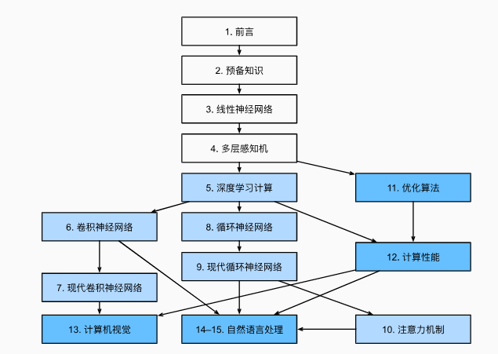

Dive into Deeplearning
本文最后更新于：2024年4月1日 下午
参考：

Intro
机器学习的关键组件：
- 用来学习的数据：data
- 转换数据的模型：model
- 用来量化模型有效性的目标函数：objective function（lose function）
- 调整模型参数以优化目标函数得到的值的算法：algorithm
数据
用于机器学习的数据一般可分为训练集（train）、测试集（validate）和验证集（test）
- 训练集用于训练即反向传播调整模型参数
- 测试集用于调整模型超参数
- 验证集用于评估模型最终性能
每个数据集由一个个样本（sample，也称数据点或数据实例）组成，大多时候这些样本都遵循独立同分布，每个样本由一组称为特征（features）的属性组成，特征数量称为该样本数据的维数（dimensionality）。机器学习模型会根据这些属性进行预测，在监督学习中，预测结果是一个特殊属性，称为标签（label）
模型
这是深度学习与经典机器学习的主要区别点：深度学习的模型更复杂，数据转换层数更多
目标函数
即误差函数，一般用来度量预测值与真实值之间的误差
优化算法
用于搜索模型的最佳参数，从而最小化目标函数。一般采用梯度下降
机器学习问题分类
监督学习：回归、分类、标记（不排斥的图片多物体标记）、搜索、推荐系统、序列学习（RNN）等
无监督学习：聚类、主成分分析、GAN等
在线学习：以上监督/无监督都属于预先获取大量数据，然后启动模型开始学习的离线学习类。离线学习将算法与环境断开，可以孤立的进行模式识别而不必被影响。而在线学习强调与环境的互动
强化学习：一个典型的与环境交互的学习方式
线性神经网络
。。。
Dive into Deeplearning
http://example.com/2023/09/14/Dive-into-Deeplearning/